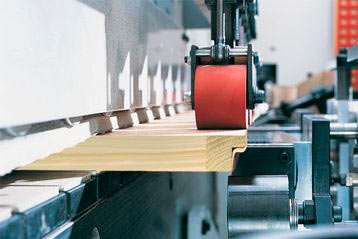

Фабрика

Компания «Брянский лес» производит двери исключительно из массива ольхи, сосны и дуба без применения шпона, МДФ, ДСП и других экологически небезопасных материалов. Двери компании «Брянский лес» отличает высокое качество, отличный дизайн и использование натурального материала - цельной древесины. У нас широкий модельный ряд - 9 основных моделей, 7 видов отделки. Возможна отделка наших дверей различными видами патины(эффект старения), что придает им неповторимую изысканность.
Предприятие оснащено современным итальянским, немецким и французским оборудованием Biesse, Cattinair, Leadermac в производстве используются высококачественные итальянские лаки компании Sayerlack, клей и уплотнитель немецких фирм Kleiberit и Deventer. Мы присутствуем на рынке с 1995 г., за это время в компании сложился коллектив единомышленников, что наряду с отработанным технологическим процессом и современным оборудованием позволяет выпускать продукцию высочайшего качества.
-
100%массив
в дверях нет ничего кроме дерева
-
Производство полного цикла
ответственность за продукцию от лесопиления до готового изделия
-
3 годагарантии
качество и надежность
Технология производства
Наша компания полностью контролирует производство дверей на всех стадиях: от бревна до готового изделия. На каждом этапе производства осуществляется тщательный контроль сырья, процесса производства и готовых изделий.
На предприятии установлены современные конвективные камерные сушки компании HAMECH. Автоматический контроль и специально подобранные режимы гарантируют получение высококачественных материалов, отсутствие остаточных внутренних напряжений, что практически полностью исключает рассыхание и коробление готового изделия.
Двери изготавливаются методом сплошного заполнения. Наиболее современной считается технология производства элементов дверей из переклеенного массива. Он представляет собой тщательно высушенные и склеенные под давлением бруски древесины. Все дефекты в виде сучков и трещинок убираются с готовой доски. Получаемые короткие заготовки квадратного сечения склеиваются или сращиваются по длине. По своей структуре древесина не однородна - ближе к центру она более плотная, ближе к коре -рыхлая. В результате получается видимая «пестрота». Но на самом деле - это доказательство того, что продукт сделан из натуральной древесины. Искусственная же декоративная пленка или шпон имеют одинаковый цвет и текстуру.
Сертификаты
{kind=link}
{kind=link}
{kind=link}
Как нас найти
ООО ”Брянский Лес”
- Адрес: 50-й км МКАД, внешняя сторона, пов. на Очаково - Заречьe, пав. D-5
- Тел: +7 (495) 646-08-42
- E-mail: esm@b-les.ru